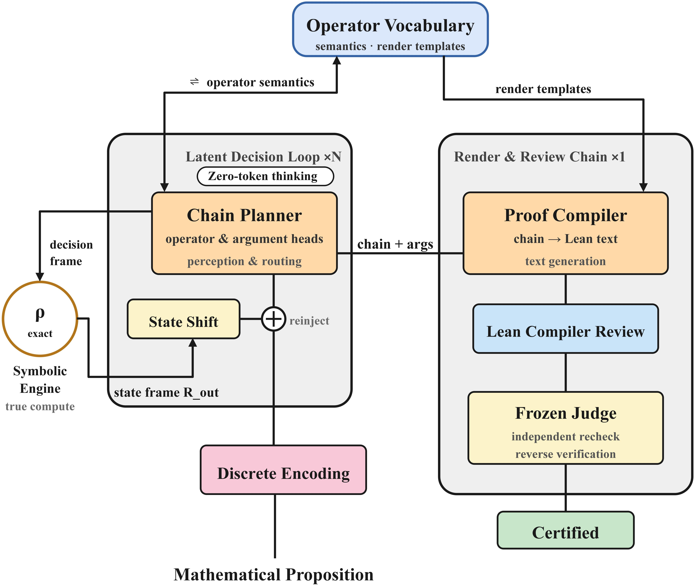
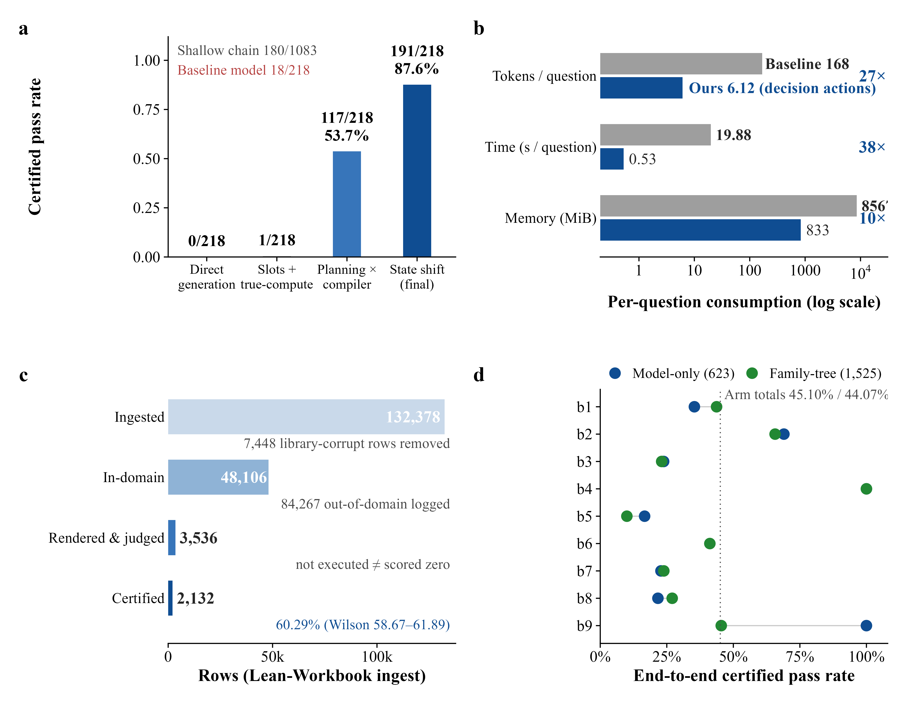
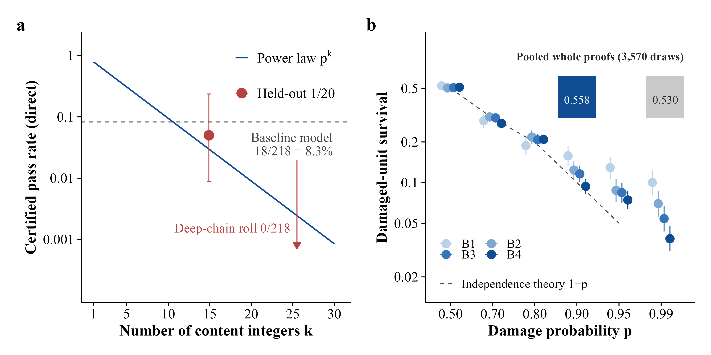

Small LM plans operator chains; a symbolic engine computes numerics and a compiler renders Lean proofs certified by the Lean compiler, evaluated on Lean-Workbook.
Abstract
In proof assistants such as Lean, a generated proof must pass machine compilation checks, so evaluation needs no human scoring. Direct generation fails on multi-step numeric propositions: a proof is valid only if every content integer is correct, so the pass rate is bounded by the k-th power of the per-integer accuracy. Controlled corruption across 2,617 reference proofs confirms this power law. SCOPE (State-Conditioned Operator Planning and Execution) enforces the natural division of labor: the model plans over an operator vocabulary, a symbolic engine executes the numerics, and a compiler renders the proof. On a 218-problem suite it certifies 191/218 (87.6%) with a 135M backbone; the 7B DeepSeek-Prover-V1.5-RL certifies 18/218 at 27.5 times the tokens and 37.5 times the wall-clock, and DeepSeek-Prover-V2-7B certifies zero on a bidirectional dual suite. Multi-step thinking costs 6.12 discrete decision actions per problem and produces no natural-language thinking text. Replacing the lagged engine state in the decision frame with the current one lifts the pass rate from 117/218 to 191/218, while up-weighting the chain-end loss hurts. On the public Lean-Workbook library, 2,132 of 3,536 gradeable admissible problems certify (60.29%) with zero regression on the main suite. All readings come from a version-frozen review with independent rechecks and reverse verification. Restricting free generation and keeping decision-time information visible is a more direct route than enlarging the model.
Problem
Direct generation of Lean proofs fails on multi-step numeric propositions. Validity requires every content integer to be correct, so the pass rate is bounded by p^k, where p is the per-integer accuracy and k is the number of integers.
Approach
SCOPE splits the work into three parts. A 135M SmolLM2 backbone plans over a finite operator vocabulary (194–220 operators), a symbolic engine executes the numerics exactly, and a template compiler renders Lean proof text that the Lean compiler checks. A factorial ablation tests feeding the current, rather than lagged, engine state into the decision frame. Controlled corruption of 2,617 reference proofs tests the power law.

Fig. 1: The SCOPE architecture and data flow. A mathematical proposition enters a latent decision loop through discrete encoding: the chain planner, with its operator and argument heads, handles perception and routing and commits to one decision per step inside the operator vocabulary, which supplies both operator semantics and rendering templates; the symbolic engine executes each step exactly, a
Results
On a 218-problem deep-chain suite, SCOPE certifies 191/218 (87.6%). DeepSeek-Prover-V1.5-RL certifies 18/218 using 27.5x the tokens. On Lean-Workbook, 2,132 of 3,536 gradeable admissible problems certify (60.29%), and the state shift raises the main-suite pass rate from 117/218 to 191/218.

Fig. 5: Main results. (a) Certified pass-rate ladder of the main configurations: 0/218 (direct generation), 1/218 (slotting), 117/218 (compilation), 191/218 (state shift), with the shallow-chain reference 180/1083 and the comparison model 18/218 marked. (b) Resource comparison (log axis): generated tokens per problem (6.12 versus 168.0), wall-clock per problem (0.53 s versus 19.88 s), and peak mem

Fig. 3: Quantitative tests of Law 1. (a) The pass rate of direct generation decays as a power law in the number k of content integers (p = 0.79), with measured points overlaid (control 1/20, deep-chain suite 0/218, comparison model 18/218). (b) Measured pass rate under controlled integer corruption (0.558) against the independent-assumption theory (0.530), bin by bin.
Configuration
Certified
Direct generation
0/218
DeepSeek-Prover-V1.5-RL (7B)
18/218
Compilation (lagged state)
117/218
SCOPE with state shift
191/218
Certified pass rates on the 218-problem deep-chain suite